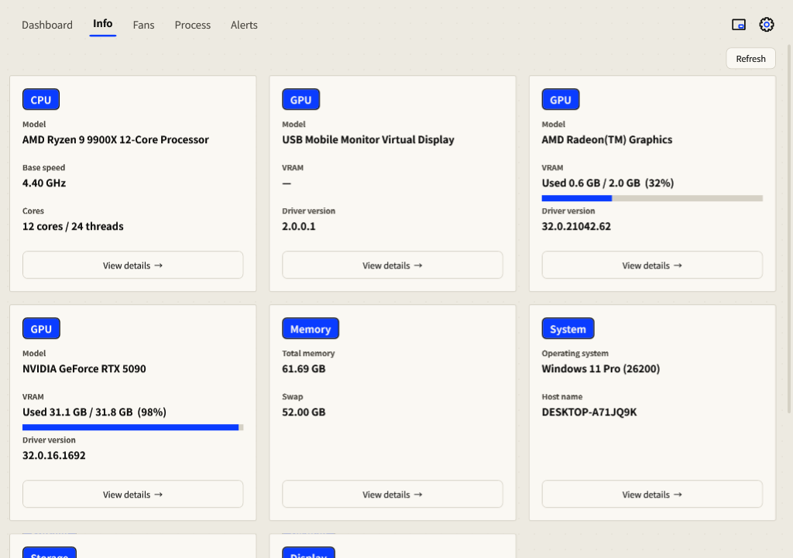

Hardware & specifications
Check what is installed, copy specifications, and compare named hardware readings.
Open hardware information
- Open Info in the top navigation.
- Read the hardware and operating-system cards. Fixed drives share a card with one capacity row per drive.
- Select View details on a card to open its full specifications.
- Select Copy specifications to copy the text. Press Esc to close details.
- Select Refresh after hardware or system information changes.

Inspect sensor sources
Check the sensor name, unit and measurement scope before comparing another tool. CPU package temperature, GPU core, hot spot and memory-junction temperature are distinct readings; unsupported values stay unavailable.
For a full list of sensor names and IDs, use --diag in the command-line tools. Compare the same named sensor and similar sample time; a missing value is not a measured zero.
Save a diagnostic listing
- Open PowerShell in the application folder with administrator access for protected sensors.
- Run
.\MomoMonitor.exe --diag diag.txt. - Open
diag.txtand compare the affected sensor name and unit with your other hardware-monitoring tool.
Review diagnostic text, copied specifications and screenshots before sharing them; they describe your hardware and may include identifying details.